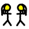
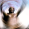
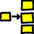

botão de mutar próximo a cada trilha que você não quer que seja mixada na saída.
botão de mutar próximo a cada trilha que você não quer que seja mixada na saída.
| [ << ] | [ >> ] | [Top] | [Contents] | [Índice] | [ ? ] |
Estes são posicionados abaixo da trilha nas quais estão sendo aplicados. Processam a trilha quando ela estiver sendo reproduzida, sem armazenamento permanente da saída, exceto quando o projeto for renderizado.
Todos os efeitos tempo-real estão listados na Janela de Recursos, divididos em dois grupos: efeitos de áudio e efeitos de vídeo. Efeitos de áudio devem ser arrastados da janela de recursos para as trilhas de áudio. Efeitos de vídeo devem ser arrastados para as trilhas de vídeo.
Se há informação na trilha de destino, o efeito será aplicado em toda a trilha. Se não há informação, o efeito é apagado. Finalmente, se uma região da trilha estiver selecionada, o efeito é colado nesta região, independentemente de se há ou não informação ali.
Alguns dos efeitos não processam informação, mas a sintetizam. No caso de um efeito de síntese, você quererá selecionar uma região da trilha de forma que a operação de arraste o cole sem que ele seja apagado.
Quando se arrasta mais de um efeito para uma trilha, você verá os efeitos sendo dispostos da base para o topo, na base da trilha. Quando a trilha for reproduzida, os efeitos são processados do topo para a base. A saída do efeito do topo torna-se a entrada do efeito da base e assim por diante.
Além de poderem ser arrastados a partir da janela de recursos, efeitos podem ser aplicados a uma trilha a partir de um menu. Clique com o botão direito do mouse em uma trilha e selecione adicinar efeito do menu. O diálogo adicionar efeito dá mais controle do que o simples arrastar e soltar - a caixa de diálogo permite que você adicione mais dois tipos de efeitos: efeitos compartilhados e trilhas compartilhadas. Selecione um plugin da coluna de Plugins e pressione Adicionar... abaixo da coluna de plugins para adicioná-lo. O resultado é o mesmo de como se o efeito houvesse sido arrastado da janela de recursos.
Quando um efeito existe embaixo de uma trilha, ele normalmente precisa ser configurado. Vá para o efeito e clique com o botão direito do mouse para revelar a caixa do efeito. Nesta caixa, existe a opção Mostrar. Esta opção faz com que a caixa de configuração do efeito apareça abaixo do cursor. A maioria dos efeitos possuem configuração, mas alguns não. Caso ele não possua, nada aparecerá quando a opção Mostrar for selecionada. Quando você mexe nos parâmetros de configuração do efeito, normalmente eles agem sobre toda a duração do efeito.
Os outros dois tipos de efeitos suportados pela caixa de diálogo Adicionar Efeito são efeitos reciclados. Para usar um efeito reciclado, três pré-requisitos devem ser satisfeitos:
No caso de um efeito compartilhado, essas condições devem ser verdadeiras. No caso de uma trilha compartilhada, eles precisam ser apenas outra trilha na linha do tempo do mesmo tipo que a trilha para a qual você está aplicando o efeito. Se você clicou com o botão direito do mouse em uma trilha de vídeo, não haverá nada na coluna Trilhas compartilhadas se nenhuma outra trilha de vídeo existir. Se você clicou com o botão direito do mouse em uma trilha de áudio não haverá nada na coluna de trilha compatilhada caso não exista outra trilha de áudio.
Se efeitos compartilhados ou trilhas compartilhadas estiverem disponíveis, eles aparecerão nas colunas Efeitos compartilhados e Trilhas compartilhadas. O botão Adicionar abaixo de cada coluna faz tudo o que estiver destacado na coluna ser adicionado abaixo da trilha atual.
Efeitos compartilhados e trilhas compartilhadas permitem que coisas muito singulares possam ser feitas. No caso de um efeito compartilhado, o efeito compartilhado será tratado como uma cópia do efeito original, exceto que no efeito compartilhado a caixa de configuração não pode ser acessada. Toda a configuração do efeito compartilhado é determinada pela configuração do efeito original e apenas a caixa de configuração do efeito original pode ser acessada.
Quando um efeito compatilhado é reproduzido, ele é processado como um efeito normal, exceto que a configuração é copiada do efeito original. Alguns efeitos detectam quando estão sendo compartilhados, como os efeitos de reverberação e o compressor. Esses efeitos determinam quais trilhas os estão compartilhando e ou mixam as duas trilhas ou usam uma delas para marcar algum valor. O reverb mixa as trilhas para simular ambiência. O compressor usar umas das trilhas compartilhadas como disparador ("trigger").
Quando uma trilha original possui uma trilhas compartilhada como um de seus efeitos, a própria trilha compartilhada é usada como um efeito tempo-real. Isso é mais comumente conhecido como combinar trilhas, mas o Cinelerra chega ao mesmo resultado adicionando trilhas compartilhadas. O fade e qualquer efeito na trilha compartilhada são aplicados à trilha original. Uma vez que a trilha compartilhada tenha processado a informação, a trilha original lâ quaisquer efeitos que estejam abaixo da trilha compartilhada e então os compõem na saída.
Além disso, uma vez que a trilha compartilhada tenha processado a saída da trilha original como um efeito em tempo-real, a trilha compartilhada se mixa na saída com suas configurações de panorâmica, modo e projetor. Assim, duas trilhas estão mixando a mesma informação na saída. Na maioria das vezes, você não vai querer que a trilha compartilhada mixe a mesma informação que a trilha original na saída. Você vai querer que ela pare logo antes do estágio de mixagem e dê a informação de volta à trilha original. Faça isso habilitando o botão de mutar próximo a cada trilha que você não quer que seja mixada na saída.
Suponha que você estivesse fazendo um vídeo e você queria que a trilha compartilhada fosse composta junto com a informação da trilha original na saída uma segunda vez. No caso de vídeo, o vídeo a trilha compartilhada sempre apareceria abaixo do vídeo da trilha original, independentemente de se ele estivesse no topo da trilha original. Isso acontece porque trilhas compartilhadas são compostas por ordem de sua adição. Já que ela é parte da trilha original, ela deve ser composta antes que a trilha original seja composta.
Muitas operações existem para manipular efeitos uma vez que eles estejam na linha do tempo. Já que mixar efeitos e mídia é um trabalho complexo, os métodos usados na edição de efeitos não são tão concisos como recortar e colar. Parte da edição acontece pelo arraste de pontos de entrada/saída, parte da edição acontece a partir de menus e parte acontece arrastando efeitos.
Normalmente quando você edita as trilhas, os efeitos seguem as decisões de edição. Se você cortar a partir de uma trilha, o efeito enconlhe. Se você arrastar pontos de entrada/saída, o efeito muda de duração. Este comportamento pode ser desabilitado selecionando Configurações->editar efeitos na janela de projeto. Isso separa os efeitos das operações de edição, mas e se você só quer editar os efeitos?
Mova o cursor da linha do tempo por sobre as bordas do efeito até que ele mude para um ícone de redimensionamento à esquerda ou à direita. Neste estado, se você arrastar o final do efeito, ele fará uma edição igual à que arrastar o final de uma trilha faz.
Os três comportamentos de expansão/encolhimento de trilha se aplicam à edição de efeitos e eles estão relacionados aos botões do mouse conforme você configurou em preferências de interface See section Interface. Quando você faz uma edição de expansão/encolhimento em um efeito, a borda do efeito é movida ao arrastá-la. Ao contrário da edição de trilha, o efeito não possui uma duração baseada na fonte. Você pode extendê-lo tanto quando desejar sem que haja limites.
Também diferentemente da edição de trilhas, a posição de início da operação de arraste não condiciona a decisão de edição à mídia. A mídia à qual o efeito está relacionado não segue as edições de efeito. Outros efeitos, entretanto, seguem as decisões de edição feitas em um efeito. Se você arrastar o final de um efeito que esteja alinhado a efeitos em outras trilhas, os efeitos nas outras trilhas serão editados enquanto a mídia permanecerá a mesma.
O que acontece se você arrastar o final de um efeito para dentro, deixando um monte de tempo não afetado por ele ao final da trilha? Quando você arrasta um efeito a partir da Janela de Recursos, você pode inseri-lo na porção da fileira não ocupada pela operação de arraste. Efeitos tempo-real são organizados em fileiras abaixo da trilha. Cada fileira pode ter vários efeitos.
Em alguns casos, você vai querer que a operação de arraste mude apenas um dos efeitos enfileirados. Isso pode ser feito primeiro posicionando o ponto de inserção no começo ou no final do efeito. Pressione a tecla SHIFT quando estiver começando a operação de arraste. Isso faz com que a operação mude apenas uma fileira de efeitos.
Além de arrastar para redimensionar a abrangência do efeito, você pode movê-los para cima ou par baixo. Cada trilha pode possuir uma pilha de efeitos abaixo dela. Ao mover um efeito para cima ou para baixo, você muda a ordem na qual os efeitos são processados na trilha. Vá para um efeito e clique com o botão direito do mouse para revelar o menu de efeitos. As opções Mover para cima e Mover para baixo movem o efeito para cima ou para baixo.
Quando você estiver movendo efeitos para cima ou para baixo, esteja ciente que se eles estiverem compartilhados como shared effects, quaisquer referências apontarão para um efeito diferente após a operação de movê-los.
Finalmente, há o arraste dos efeitos propriamente ditos. Arrastar efeitos se parece muito a arrastar os blocos de edição. Você deve selecionar a  seta para entrar no modo de arrastar e soltar antes de conseguir arrastar efeitos. Os efeitos se colam às bordas das mídias, dos efeitos e das trilhas. Esteja ciente que se você arrastar uma referência a um efeito compartilhado, a referência normalmente apontará para o efeito errado depois disso.
seta para entrar no modo de arrastar e soltar antes de conseguir arrastar efeitos. Os efeitos se colam às bordas das mídias, dos efeitos e das trilhas. Esteja ciente que se você arrastar uma referência a um efeito compartilhado, a referência normalmente apontará para o efeito errado depois disso.
Clique com o botão direito do mouse em um efeito para revelar o menu para o efeito. Selecione adicionar... para mudar o efeito ou mudar a referência caso ele seja um efeito compartilhado.

Contrário à experiência da ciência da computação, o compressor de áudio não reduz a quantidade de informação necessária para armazenar o áudio. O compressor de áudio reduz a abrangência dinâmica do áudio. Na verdade, no Cinelerra, o compressor faz a função de um expansor e compressor.
O compressor funciona calculando o nível máximo de som dentro de um certo período de tempo da posição atual. O nível máximo de som é usado como o nível de entrada de som. Para cada nível de entrada de som há um nível de saída de som especificado pelo usuário. O ganho na posição atual é ajustado de forma que o nível máximo de som na abrangência de tempo seja o valor especificado pelo usuário.
O compressor possui um gráfico que correlaciona cada nível de entrada de som a um nível de saída. A direção horizontal é o nível de entrada de som em dB. A direção vertical é o nível de saída de som em dB. O usuário especifica os níveis de saída de som criando pontos no gráfico. Clique no gráfico para criar ym ponto. Se dois pontos existem, arraste um ponto por sobre o outro para apagá-lo. O último ponto a ser selecionado terá seus valores exibidos em caixas de texto para um ajuste mais preciso.
Para fazer o compressor reduzir a abrangência dinâmica do áudio, faça com que todos os valores de saída sejam mais altos que os valores de entrada exceto 0 dB. Para fazer o compressor expandir a abrangência dinâmica do áudio, faça todos os valores de saída exceto 0 dB serem mais baixos que os valores de entrada. O algoritmo atual limitará todos os níveis de som acima de 0 dB para 0 dB, então, para conseguir um efeito de sobrecarga ("overload"), ponha um efeito de ganho antes do compressor para reduzir todos os níveis e siga-o com outro efeito de ganho para amplificar todos os níveis de volta para acima de 0 dB.
Segundos para reação: Determina para onde com relação à posição atual o nível máximo de áudio é levado e quão rápido o ganho é ajustado para alcançar este pico. É notado em segundos. Se este número for negativo, o compressor lê à frente da posição atual para obter o pico futuro. O ganho é jogado ("ramped") para aquele pico por sobre um tempo de reação. Isso o permite chegar ao nível de saída desejado exatamente quando o pico de entrada ocorre na posição atual.
Se o tempo de reação for positivo, o compressor busca apenas a posição atual para o ganho e joga ("ramps") o ganho por sobre um tempo de reação para chegar ao nível de saída desejado. Ele chega ao nível de saída exatamente um período de reação após detectar o pico de entrada.
Segundos para declínio: Se o pico for maior que o nível atual, o compressor joga ("ramps") o ganho para cima até o valor de pico. Então, se um pico futuro for menor que o pico atual, ele joga o ganho para baixo. O tempo levado para jogar o ganho para baixo pode ser maior que o para elevá-lo. Este tempo de jogá-lo para baixo são os segundos de queda.
Tipo de Gatilho: O compressor é um efeito multi-canal. Várias trilhas podem dividir um compressor. Como o sinal de muitas trilhas é interpretado é determinado pelo tipo de gatilho.
O Tipo de Gatilho usa o valor informado na caixa de texto Gatilho como o número da trilha a ser usada como entrada para o compressor. Isso permite que uma trilha que não é nem ouvida determine a altura de outras trilhas.
O gatilho Máximo pega a trilha mais alta e a usa como a entrada para o compressor.
O tipo de gatilho Total adiciona o sinal de todas as outras trilhas e usa o total como entrada para o compressor. Essa é a compressão que soa mais natural e é ideal quando a média de várias trilhas é jogada para falantes únicos ("single").
Gatilho: O compressor é um efeito multi-canal. Várias trilhas podem dividir um compressor. Normalmente apenas uma trilha é sondada para o pico de entrada. Esta trilha é especificada pelo Gatilho. Ao dividir várias trilhas e reproduzi-las com o valor de gatilho, você pode fazer uma onda seno de uma trilha seguir a amplitude de uma bateria de outra trilha, por exemplo.
Suavizar apenas: Para visualizar o que o compressor está fazendo para o nível de som, esta opção faz com que ele substitua a onda sonora com apenas o valor atual de pico. Assim fica bem fácil ver como os Segundos para reação afetam os valores detectados de pico.

Apenas informe quantos segundos você quer atrasar a trilha de vídeo.

conserte-me.

conserte-me.

conserte-me.

conserte-me.

conserte-me.

conserte-me.

conserte-me.

conserte-me.

conserte-me.

Este efeito lê o áudio diretamente da entrada da placa de som. Ele substitui qualquer áudio na trilha, então é normalmente aplicado a uma trilha vazia.
Para usar o Áudio Ao Vivo, destaque uma região horizontal de uma trilha de áudio ou defina pontos de entrada e saída. Então, solte o efeito Áudio Ao Vivo nela. Crie trilhas extras e adicione cópias compartilhadas do primeiro efeito Áudio Ao Vivo às outras trilhas para possuir canais de gravação extras.
O Áudio Ao Vivo usa o driver de áudio selecionado em Configurações->Preferências->Reprodução->Saída de Audio para gravação, mas ao contrário do que acontece em gravações, ele usa o Tamanho do buffer de reprodução como o tamanho de buffer de gravação e usa a taxa de amostragem do projeto como taxa de amostragem.
Essas configurações são críticas, já que algumas placas de som não conseguem gravar no mesmo tamanho de buffer em que elas fazem a reprodução. Áudio Ao Vivo tem sido mais confiável quando o driver de gravação é o ALSA e o tamanho do fragmento de reprodução ("playback fragment") é 2048.
Coloque outros efeitos após o Áudio Ao Vivo para processar entrada da placa de som em tempo-real.
Agora, a notícia ruim. Com o Áudio Ao Vivo não há pré-leitura ("read-ahead"), então efeitos como o compressor ou atrasarão se eles tiverem pré-leitura habilitada ou a reprodução vai sofrer um under-run.
Outro problema é que às vezes o relógio de gravação na placa de som é levemente mais lento que o relógio da reprodução. A gravação eventualmente fica para trás e a reprodução soa zoada.
Finalmente, Áudio Ao Vivo não funciona ao reverso.
conserte-me.

conserte-me.

Assim como os métodos de esticamento de tempo, existem três métodos de modificação de nível: Mudança de freqüência, Refazer amostragem, e caixa de diálogo de informação do recurso. Mudança de Freqüência é um efeito tempo-real que pode ser arrastado e solto em trilhas de áudio graváveis. Mudança de Freqüência usa uma transformação Fourier rápida para tentar mudar a freqüência sem modificar a duração, mas isso introduz artefatos.
Já que os artefatos ("windowing artifacts") são menos obstrusivos em um áudio que obviamente sofreu uma mudança de freqüência, a Mudança de Freqüência é principalmente útil para mudanças extremas de freqüência. Para mudanças médias de freqüências, use Refazer amostragem da interface Áudio->Renderizar efeito. Refazer a Amostragem pode mudar a freqüência em até 5% sem uma mudança notável na duração.
Um outro jeito de mudar a freqüência levemente é ir para a janela de Recursos, destacar a pasta mídia, clicar com o botão direito do mouse em um arquivo de áudio e selecionar Info. Ajuste a taxa de amostragem na caixa de diálogo Info para ajustar a freqüência. Este método também requere clicar com o botão esquerdo do mouse na borda direita das trilhas de áudio e arrastá-las para a esquerda ou para a direita para corresponderem às mudanças de duração.

Aplique Reverter áudio a uma trilha de áudio e reproduza-a de trás para frente. O som tocará para frente.
Saiba que quando reverter o áudio, a onda sonora na linha do tempo não mais refletirá a saída revertida.

conserte-me.

conserte-me.

conserte-me.

conserte-me.

A maioria das transmissões de tv são recebidas com uma resolução de 1920x1080, mas se originam de uma fonte 720x480 no estúdio. É uma perda de espaço comprimir todo o 1920x1080 se os únicos detalhes resolvíveis são 720x480. Infelizmente, redimensionar um vídeo 1920x1080 para 720x480 não é tão simples como encolhê-lo.
Na estação de tv, o material 720x480 original foi primeiro convertido para campos de 720x240. Cada campo foi então re-escalado para 1920x540. Os dois campos 1920x540 foram finalmente combinados com entrelaçamento para formar a imagem 1920x1080. Esta técnica permite que uma tv de consumidor reproduza a imagem re-amostrada sem circuitos extras para segurar o entrelaçamento 720x480 em uma imagem 1920x1080.
Se você simplesmente desentrelaçasse as imagens 1920x1080, você acabaria com uma resolução de 720x240. O efeito 1080 para 480 extrai propriamente dois campos de tamanho 1920x540 da imagem, redimensiona-os separadamente e os combina de novo para restaurar uma imagem 1920x480 entrelaçada. O efeito Escala deve ser então aplicado para reduzir o tamanho horizontal para 960 ou 720 dependendo da razão de aspecto original.
As trilhas para as quais 1080 para 480 for aplicado precisam estar a uma resolução de 1920x1080. As configurações em configurações->formato devem estar em uma resolução de pelo menos 720x480.
O efeito não sabe se a primeira fileira da imagem 1920x1080 pertence à primeira fileira do 720x480 original. Você deve especificar o que a primeira fileira é nas configurações do efeito.
A saída deste efeito é uma imagem pequena no meio do quadro 1920x1080 original. Use o projetor para centralizar a imagem de saída no reprodutor.
Finalmente, uma vez que você tenha um vídeo entrelaçado 720x480, você pode tanto aplicar Quadros para campos ou Telecine Inverso para recuperar mais dos quadros progressivos originais.
Este efeito é aquele que você usa se quiser chegar a um aspecto de "filme antigo" ou aparência de programa de tv. Ele vai colocar linhas pra cima e pra baixo do vídeo, além de colocar uns pontos pretos na tela. O uso é feito junto com Brilho/Contraste e Balanço de Cores para fazer seu vídeo parecer realmente um vídeo antigo em preto e branco.

Este efeito desfoca uma trilha de vídeo. Os parâmetros são:

Se você quer esclarecer uma tomada escura ou adicionar luz, esta é a ferramente a ser usada. Não use este efeito em excesso para não degradar a qualidade de seu vídeo. Use-o junto com quadros-chave para fazer brilhar uma tomada longa que está escura no começo, mas clara ao final. Geralmente, você vai querer mudar o brilho e o contraste usando mais ou menos os mesmos valores (por exemplo, escuridão 28, contraste 26) de forma que as cores originais permaneçam intactas.

O efeito de vídeo queimando faz o seu vídeo "queimar" onde há pequenos pedaços de luz colorida no vídeo, nas bordas de uma camiseta branca por exemplo. Ele pode ser um bom recurso para um vídeo musical ou uma ferramenta para te ajudar a soltar a imaginação em seu vídeo.

Este efeito apaga pixels que combinem com a cor selecionada. Eles são substituídos por preto se não há canal alfa ou transparência se há um canal alfa. A seleção do modelo de cor é importante para determinar o comportamento.
O Chroma key usa ou a luminância ou a gradação da cor para determinar o que será apagado. Usar valor considera apenas a luminância para determinar a transparência. Selecione uma cor central para apagar usando o botão Cor. Alternativamente, uma cor pode ser selecionada diretamente do quadro de saída usando a ferramenta selecionador de cor na janela de composição primeiro e, então, selecionando o botão Usar selecionador de cor. Isso marca a cor do chroma key para a cor atual colhida pelo selecionador de cor.
Saiba que a saída do chroma key é alimentada de volta para o compositor, então selecionar uma cor novamente do compositor usará a saída do efeito chroma key. O chroma key deve estar desabilitado quando se quer selecionar cores com o Selecionador de cor.
Se a luminância ou a gradação de cor estiver dentro de um certo valor de entrada, ela será apagada. Aumentar a entrada determina a abrangência de cores a ser apagada. Entretanto, isso não é um simples interruptor ligado/desligado. Conforme a cor se aproxima da borda do valor de entrada, ela gradualmente vai se apagando se o valor de gradiência estiver alto ou é rapidamente apagada se a gradiência estiver baixa. A gradiência é definida aqui como o número de valores extras flanqueando a entrada requerida para ir de opaco a transparente.
Normalmente a entrada é bastante baixa quando se está usando uma gradiência alta. Os dois parâmetros tendem a ser exclusivos porque a gradiência preenche a entrada extra.
A gradiência tenta amenizar as bordar do chroma key, mas não funciona bem para fontes comprimidas. Uma técnica popular de amenização é usar a gradiência no máximo e um efeito em cadeia de desfoque abaixo do efeito chroma key para borrar apenas o alfa.

conserte-me.

O Balanço de Cores do Vídeo é uma boa ferramenta para se usar com Brilho/Contraste e Saturação de tons para tentar compensar possíveis erros de filmagem (luz baixa, etc. Ele não consegue fazer muita coisa sem abaixar muito a qualidade do vídeo, entretanto. Ele é como o efeito de balanceamento de cores em programas de manipulação de imagens, como o GIMP. Com ele, você pode mudar as cores que estão sendo enviadas para a saída CMY (Ciano, Magenta, Amarelo) ou RGB (Vermelho, Verde, Azul).

Este efeito descarta os quadros de uma trilha que são mais similares para reduzir a taxa de quadros. Isso normalmente é aplicado a um DVD para converter vídeos a 29.97 quadros por segundo para a taxa de quadros de filme, a 23.97, mas este efeito de decimar consegue pegar qualquer taxa como entrada e convertê-la para qualquer taxa de saída menor.
A taxa de saída do Decimar é a taxa de quadros por segundo do projeto. A taxa de entrada é configurada na interface de usuário do Decimar. Para converter vídeo progressivo a 29.97 quadros por segundo para filme a 23.97 quadros por segundo, aplique um efeito de decimar na trilha. Configure a taxa de entrada do decimar para 29.97 e a taxa do projeto para 23.97.
Saiba que qualquer efeito colocado antes dos processos de decimar processam o vídeo à taxa de entrada do decimar e cada efeito colocado após o decimar processa o vídeo à taxa de quadros do projeto. Efeitos computacionais intensivos devem vir abaixo do decimar.

O efeito Desentrelaçar evoluiu com os anos para desentrelaçamento e muito mais. De fato, dois dos métodos de desentrelaçamento, Telecine Inverso e Quadros para campos, são efeitos separados. O efeito Desentrelaçar oferece várias variações de replicação de linha para aliminar artefatos "pente" no vídeo entrelaçado. Ele também possui algumas ferramentas de troca de linhas para consertar vídeo capturado incorretamente ou fazer com que o resultado de um efeito de Reversão exiba os campos na ordem correta.

conserte-me.

conserte-me.

conserte-me.

A Chave de diferença cria transparência em áreas que sejam similares entre dois quadros. O efeito Chave de diferença deve ser aplicado a duas trilhas. Uma trilha contém a ação em frente a um fundo constante e a outra trilha o fundo sem nada à sua frente. Aplique o efeito Chave de diferença à trilha com a ação e aplique uma cópia compartilhada dele à trilha com o fundo. A trilha com o fundo deve ser mutada e abaixo da trilha com a ação e o modelo de cor deve possuir um canal alfa.
Pixels que forem diferentes entre o fundo e trilha de ação serão tratados como opacos. Pixels que forem similares são tratados como transparentes. Mude a entrada na janela da Chave de diferença para fazer mais pixels que não são da mesma cor transparentes. Mude a Gradiência para mudar a razão diante da qual a transparência se esvanece conforme os pixels tornam-se mais diferentes.
A gradiência conforme definida aqui é o número de valores extras flanqueando a entrada requerida para ir de opaco a transparente. Uma gradiência alta é mais útil com uma entrada baixa porque a gradiência preenche a entrada extra.
Usar valor faz a intensidade de pixels ser comparada ao invés da cor.
Aplicar um desfoque à trilha de cima com apenas o canal alfa sendo desfocado pode suavizar a borda da transparência.
Nota: Atualmente, este efeito tem dado pau quando usado em modos de cor YUV.

Outro efeito de Kentaro (effectTV).

Reduzir a amostragem é o processo de reduzir o tamanho de uma imagem jogando informação fora, reduzindo a taxa de amostragem.
Parâmetros se refere a:
Horizontal
Deslocamento Horizontal
Vertical
Deslocamento Vertical
Canais

Este efeito lê os quadros a duas vezes a taxa de quadros do projeto, combinando dois quadros de entrada em um quadro único entrelaçado de saída. Efeitos precedendo campos para quadros processam quadros a duas vezes a taxa de quadros do projeto. Cada quadro de entrada é chamado um campo.
Campos para quadros precisa saber qual campo corresponde a quais linhas no quadro de saída. O jeito mais fácil de descobrir isso é tentar as duas opções da janela. Se os campos de entrada são resultantes de um processo de duplicação de linhas como quadros para campos, a configuração errada resultará em uma saída mais desfocada. Se os campos de entrada são o resultado de um processo de conversão padrão como 1080 para 480, a configuração errada não vai fazer qualquer diferença.
O "debobber" que converte 720x480 entrelaçado em 1920x1080 entrelaçado ou 1280x720 progressivo parece degradar a resolução vertical a ponto de ela não poder ser recuperada.

Este efeito permite inverter uma trilha de vídeo (ou uma porção dela) da esquerda para a direita, direita para a esquerda, cima para baixo, baixo para cima.
A janela de diálogo é simples, uma vez que apenas os parâmetros verticais e horizontais são requeridos.

Este plugin aplica a operação reversa ao plugin "Campos para Quadros": ele extrai os dois campos entrelaçados armazenados em linhas alternantes do material entrelaçado fonte e gera uma saída como se eles fossem quadros inteiros separados. As linhas alternantes que faltarem em cada quadro de saída são interpoladas. (A nomenclatura deste par de plugins é obviamente enganadora no que se refere ao uso comum dos termos "campo" e "quadro"; normalmente, "campos" denotam as metades das imagens, entrelaçadas, e "quadro" denota a imagem completa).
Este plugin é útil apenas caso sua saída seja puxada com o dobro da taxa de quadros no que diz respeito ao material de origem. Um cenário típico de uso é quando se faz máscara, escalamento e translação em material entrelaçado sem a necessidade de se destruir a informação temporal adicional contida em tal material de origem. Isso é útil se o seu formato alvo pretendido for entrelaçado. Se, de outro modo, você quiser apenas dar saída a exibissões progressivas (por exemplo, caso você crie vídeos para serem exibidos em monitores de computador somente) então será muito mais conveniente desentrelaçar o material de origem antes de fazer qualquer outro processamento.
Processando material entrelaçado sem desentrelaçamento

Em sua forma mais simples, destaque uma região da trilha para congelar, solte o efeito de congelar quadro na região destacada e o quadro com a numeração mais baixa ("lowest numbered frame") na área afetada será reproduzido por toda a região afetada.
Congelar Quadro possui uma opção habilitado que pode ser objeto de quadros-chave. Regiões de um efeito Congelar Quadro que estão habilitadas repetem o quadro de numeração mais baixa desde o último quadro-chave. Isso gera possibilidades únicas.

Imagens brutas de câmera armazenam cores em uma escala logarítmica. Os pretos nessas imagens são próximos a 0 os brancos supostamente seriam a infinidade. As placas de vídeo e a maioria dos codecs de vídeo armazenam cores em uma escala linear, mas o Cinelerra mantém as imagens brutas de câmera em sua escala logarítmica original quando as renderiza. Isso é necessário porque o particionador ("parser") da imagem bruta não consegue sempre decodificar os valores corretos de gama para as imagens. Ele também faz seu processamento em números inteiros 16 bit ("16 bit integers"), o que remove um monte de informações.
O efeito gama converte as cores logarítmicas em cores lineares por meio de um valor gama e um valor máximo. O valor gama determina quão inclinada a curva de saída será e o valor máximo é onde 1.0 na saída corresponderá ao brilho máximo da entrada.
O efeito gama possui mais dois parâmetros para simplificar a correção de gama. A opção automático faz com que ele calcule máx a partir do histograma da imagem. Use-a quando for fazer uma pré-visualização de uma longa lista de imagens, já que isso muda para cada imagem.
A opção Usar selecionador de cor usa o valor atualmente no selecionador de cores para estabelecer o valor máx. Note que toda vez que você seleciona uma cor da janela de composição, você precisa apertar Usar selecionador de cor para aplicar o novo valor.

O efeito Gradiente sobrepõe uma cor suave de gradiente ao topo de cada quadro de vídeo. Ele é útil para todos os tipos de preenchimento de fundo, para filtragem parcial ou para adicionar destaques em movimento. O efeito Gradiente pode gerar preenchimentos de cor linear ou circular. Para preenchimentos lineares, você pode escolher o ângulo; para preenchimentos circulares, o centro do padrão de gradiente criado. Além disso, você pode controlar a gradiência da cor de transição selecionando uma função de transição (linear, logarítmica, quadrada) e mudando o raio de "início" e "fim". Note que ambas as cores usadas nesta transição de cores podem conter um valor arbitrário de Alfa (transparência). Todos os parâmetros podem ser marcados com quadros-chave e serão interpolados entre os quadros-chave.
Observe os problemas já bem conhecidos:

Mostra o número de ocorrências para cada cor na trama de um histograma.
Ele sempre é executado em ponto flutuante ("floating point") RGB, independentemente do espaçamento de cor do projeto. O histograma possui duas configurações de parâmetros de transferência: a transferência de entrada e a transferência de saída.
Quatro histogramas são possíveis no visor de histograma. Os histogramas vermelho, verde, azul mostram a entrada de histograma para vermelho, verde, azul e as multiplica por uma transferência de entrada para obter a saída de vermelho, verde, azul. Então, a saída de vermelho, verde, azul são escaladas por uma transferência de saída. O vermelho, verde, azul escalados são convertidos em um valor e é feita a trama no valor do histograma. O valor do histograma então muda dependendo das configurações de vermelho, verde, azul. As transferências de valor são aplicadas uniformemente para o R, G, B após suas transferências de cores serem aplicadas.
Selecione qual transferência para vê-la selecionando um dos canais ao topo do histograma.
A transferência de entrada é definida por um gráfico sobreposto ao histograma. A direção horizontal corresponde a cada cor possível de entrada. A direção vertical corresponde à cor de saída para cada cor de entrada. O vídeo que entra no histograma é primeiro tramado na trama do histograma e então é transladado de modo que os valores de saída agora igualem os valores de saída para cada valor de entrada no gráfico de entrada.
O gráfico de entrada é editado adicionando-se ou removendo-se qualquer número de pontos. Clique e arraste em qualquer lugar do gráfico de entrada para criar um ponto e movê-lo. Clique em um ponto existente para fazê-lo ficar ativo e movê-lo. O ponto ativo é sempre indicado sendo preenchido. A entrada do ponto ativo e a cor de saída são dados no topo da janela. As cores de entrada e saída do ponto podem ser mudadas por meio dessas caixas de texto.
Pontos podem ser apagados ao primeiro se selecionar um ponto e depois arrastá-lo ao outro lado de um ponto adjacente. Eles também podem ser apagados ao selecioná-los e pressionando a tecla delete.
Após a transferência de entrada, a imagem é processada pela transferência de saída. A transferência de saída é simplesmente o mínimo e o máximo para se escalar as cores de entrada. Valores de entrada de 100% são escalados para baixo para o máximo da saída. Valores de entrada de 0% são escalados para cima para o mínimo da saída.
Valores de entrada abaixo de 0 são sempre achatados para 0 e valores de entrada acima de 100% são sempre achatados para 100%. Clique e arraste nos triângulos de gradiência de saída para mudá-los. Ele também possui caixas de texto onde se podem entrar valores.
Habilite o botão automático para que o histograma faça um cálculo automático da transferência de entrada para vermelho, verde, azul mas não o valor. Ele faz isso escalando o meio 99% dos pixels para pegar 100% da largura do histograma. O número de pixels permitidos para poderem passar é configurado pela caixa de texto Entrada. Uma entrada de 0.99 escala a entrada de modo que 99% dos pixels possam passar. Entradas menores permitem que menos pixels passem e fazem a saída parecer mais contrastada.
A transferência automática de entrada é calculada pelos canais R, G e B, mas não o valor.
Trama do Histograma
Dividir saída
Por Kentarou effectTV

Com este efeito, você pode mudar a gradação, saturação e valor. Os parâmetros são modificados usando três deslizadores simples.

O efeito Interpolar tenta criar uma ilusão de taxa de quadros mais alta a partir do material de origem de taxas de quadros muito baixas alterando os quadros com o tempo. Ele faz uma média de dois quadros de entrada para cada quadro de saída. Os quadros de entrada estão a tempos diferentes, resultando em uma dissolução para todos os quadros de saída entre os quadros de entrada. Há duas formas de especificar os quadros de entrada. Você pode especificar a taxa de quadros de entrada que é mais baixa do que a taxa de quadros do projeto. Isso faz com que os quadros de entrada sejam pegos a intervalor pares.
Você também pode especificar lugares de quadros-chave como posições dos quadros de entrada. Deste modo, a taxa de quadros de saída é usada como a taxa de quadros de entrada e você simplesmente cria quadros-chave onde você quiser especificar um quadro de entrada.

Observação: este efeito funciona somente para modelos de cor flutuante.
conserte-me.

Esta é a ferramenta mais efetiva de desentrelaçamento quando o material é um transfer de vídeo de um filme. Aqui o filme foi convertido de 24 quadros por segundo para 60 quadros por segundo. Então, os 60 quadros por segundo foram re-amostrados para 30 quadros por segundo extraindo-se as linhas ímpares e pares e entrelaçando as linhas. O efeito IVTC é primariamente uma forma de converter vídeo entrelaçado para vídeo progressivo. Ele desfaz três padrões de entrelaçamento.
A AB BC CD D
AB CD CD DE EF
Automático
As duas primeiras opções são padrões fixos e afetadas pelos parâmetros Padrão do deslocamento e Campo ímpar primeiro. A última opção cria várias combinações de linhas para cada quadro e pega a combinação mais progressiva. É um algoritmo de força bruta.
Esta técnica não depende de um padrão como outras técnicas e é menos destrutiva, mas o tempo vai ficar um pouco balançado ("jitter") devido à falta de uma redução de taxa de quadros. Para suavizar o tempo, você deve aplicar um efeito de Decimar após o telecine.

Também chamado de Inverter Vídeo, este é um método de reverter as cores de uma trilha de vídeo.
Os quatro parâmetros se referem aos canais (Vermelho, Azul, Verde, Alfa)

Desfoque possui três estilos: Linear, Radial e de Aproximação.
Os parâmetros se referem a:

Este efeito lê o vídeo diretamente da entrada da placa de captura. Ele substitui qualquer vídeo na trilha, então é normalmente aplicado a uma trilha vazia. A configuração para a placa de captura é pega das preferências de gravação. Vá para Configurações->Preferências->Gravação para configurar a placa de captura.
Vá para a seção Entrada de Vídeo, onde diz Driver de Gravação. Ele deve estar configurado para Video4Linux2 ou IEC 61883. Outros drivers de vídeo não foram testados com o efeito Vídeo Ao Vivo e provavelmente não funcionarão.
Para vídeo ao vivo, a seleção de Formato de Arquivo e Vídeo precisa estar configurada para um formato que a linha do tempo possa usar. O formato de arquivo deve ser Quicktime para Linux e a gravação de vídeo deve estar habilitada para ele. Clique no ícone de ferramenta  para configurar a compressão do vídeo.
para configurar a compressão do vídeo.
A compressão do vídeo depende do driver de gravação. Para o driver de gravação Video4Linux2, a compressão deve ser Motion JPEG A. Para o driver IEC 61883, a compressão deve ser DV. Isso faz com que o driver gere uma saída em um modelo de cor que a linha do tempo consiga usar.
Algumas placas provêm configurações de cor e canal. Vídeo Ao Vivo pega as configurações de cor dos valores configurados na janela Entrada de Vídeo. Vá para Arquivo->Gravação para revelar a interface de gravação e a janela Entrada de Vídeo. Valores configurados na janela Entrada de Vídeo são usados pelo Vídeo ao Vivo. Quaisquer canais que a placa de captura suporte precisam ser configurados na interface Entrada de Vídeo, já que alguns canais são usados pelo efeito Vídeo ao Vivo.
Com a gravação de vídeo configurada, destaque uma região horizontal de uma trilha de vídeo ou defina pontos de entrada e saída. Então, jogue o efeito Vídeo Ao Vivo nela. Jogue outros efeitos após Vídeo Ao Vivo para processar o vídeo ao vivo em tempo real. Para resultados melhores, você deve usar OpenGL e uma placa de vídeo que suporte a linguagem de sombreamento ("shading") GL. Vá para Configurações->Preferências->Reprodução->Saída de Vídeo para habilitar o driver OpenGL.
Apenas um efeito Vídeo Ao Vivo pode existir em qualquer momento na linha do tempo. Ele não pode ser compartilhado por mais de uma trilha.

Seções do vídeo podem ser deixadas em loop arrastando um efeito loop nela. Contrário à opção configurações->reprodução em loop, os efeitos de loop podem ser renderizados onde a opção configurações->reprodução em loop não podem. Os efeitos de loop também são convenientes para regiões curtas.
Os efeitos de loop possuem uma opção: o número de quadros ou amostras a entrarem em loop. Isso especifica a duração da região a entrar em loop começando ou a partir do começo do efeito ou do último quadro-chave. A região é replicada por todo o efeito.
Cada vez que um quadro-chave é configurado em um efeito de loop, o quadro-chave se torna o começo da região a entrar em loop. Marcar vários quadros-chave em sucessão faz várias regiões entrarem em loop. Marcar um quadro-chave único faz a região após o quadro-chave entrar em loop através do efeito, não importando onde o quadro-chave está. O fim de um efeito pode entrar em loop a partir do início marcando o quadro-chave perto do final.
O rastreador de movimento é uma aplicação quase completa por si só. O rastreador de movimento rastreia dois tipos de movimentação: translação e rotação. Ele pode rastrear as duas simultaneamente ou apenas uma. Ele pode fazer restreamento de 1/4 de pixel ou de pixel único. Ele pode estabilizar a moção ou fazer com que uma trilha siga a movimentação de outra.
Embora o rastreador de movimento seja aplicado como um efeito tempo-real, ele normalmente precisa ser renderizado para que se veja resultados úteis. O efeito leva um longo tempo para detectar a movimentação precisamente.
O rastreador de movimento funciona usando uma região do quadro como região a ser rastreada. Ele compara esta região entre dois quadros para calcular o movimento. Esta região pode ser definida em qualquer lugar da tela. Uma vez que o movimento entre dois quadros tenha sido calculado, um número de coisas pode ser feito com aquele vetor de movimento. Ele pode ser escalado por um valor estabelecido pelo usuário e forçado para uma abrangência máxima. Ele pode ser jogado fora ou acumulado com todos os vetores de movimento que são levados até a posição atual.
Para economizar tempo, o resultado da movimentação pode ser salvo para reuso posterior, re-chamado a partir de um cálculo prévio ou descartado.
O rastreador de movimento possui uma noção de dois rastreadores, a camada-mestre ("master layer") e a camada-alvo ("target layer"). A camada mestre é onde a comparação entre dois quadros se dá. A camada alvo é onde a moção é ou aplicada à trilha ou compensada para a moção na camada mestre.
A elaboração do rastreamento de movimentação é suficiente para sustentar companhias inteiras e construir carreiras por aí. O rastreador de movimento no Cinelerra não é tão sofisticado como alguns rastreadores de movimento de primeira classe, mas é o suficiente para suavizar algumas tomadas de câmera.
Aqui está uma breve descrição dos parâmetros do rastreador de movimento:
Uma vez que este é um efeito muito lendo, existe um método para aplicá-lo para conseguir o melhor dele. Primeiro, desabilite a reprodução de trilha na qual você está fazendo o rastreamento de moção. Então, jogue o efeito em uma região do vídeo com alguma movimentação para ser rastreada. Rebobine o ponto de inserção para o início da região. Marque Ação -> Não fazer nada. Marque Cálculo -> Não calcular. Habilite Desenhar vetores. Então habilite a reprodução da trilha para ver as áreas onde o rastreamento está sendo feito.
Habilite quais vetores de moção de translação ou moção de rotação você quer rastrear. Observando a janela de compositor e ajustando as configurações de Bloco x,y, centralize o bloco na parte da imagem que você quer rastrear. Então marque o raio de busca, tamanho de bloco e coordenadas de bloco para translação e rotação.
Uma vez que isso tenha sido configurado, marque o cálculo para Salvar coordenadas e faça buscas de teste pela seqüência para ver se o rastreador de moção funciona e para salvar os vetores de moção. Quando isso tiver sido feito, desabilite a reprodução da trilha, desabilite Desenhar vetores, marque a ação de moção para ser feita na camada alvo e mude o cálculo para Carregar coordenadas. Finalmente, habilite a reprodução da trilha.
Quando usar um único quadro de início para calcular a movimentação de uma seqüência, o quadro de início deve ser um quadro único com a menor moção com relação aos outros quadros. Raramente será o quadro 0. Normalmente é um quadro perto do meio da seqüência. Desta forma, o radio de busca precisa chegar a apenas metade de toda a extensão da moção na seqüência.
Se o rastreador de moção for usado em uma fazenda de renderização, os modos Salvar coordenadas e quadro anterior não funcionarão. Os resultados da operação de salvar coordenadas são salvos nos discos rígidos dos nódulos de renderização, não no nódulo mestre. Operações futuras de renderização nesses nódulos processarão quadros diferentes e lerão as coordenadas erradas dos sistemas de arquivos dos nódulos. O fato de que os nódulos de renderização visualizam apenas uma porção da linha do tempo também faz com que o quadro anterior funcione, já que ele depende de um cálculo do vetor de moção absoluto que se inicia no quadro 0.
O método descrito acima é o rastreamento de moção em 2 passagens. Uma passagem é usada apenas para calcular os vetores de movimento. Uma segunda passagem é usada para aplicar os vetores de movimento ao material. Isso é mais rápido que uma passagem única porque assim os erros no cálculo do vetor de movimento podem ser descobertos rapidamente.
Isso também permite que o rastreamento de moção use um modelo de cor que demande menos como o RGB888 no passo de rastreamento ("scanning") e um modelo de cor que demande mais como o RGB Float no passo de ação. O passo de rastreamento leva muito mais tempo do que o segundo.
Isso sofre da desvantagem de não ser prático para seqüências extremamente longas onde algum erro seja aceitável e a qualidade da imagem seja ruim antes de mais nada, como estabilizar tomadas de câmera.
O método mais lento é calcular o vetor de moção e aplicá-los simultaneamente. Este método pode usar uma trilha como a trilha de cálculo do vetor de moção e outra trilha como a trilha alvo para as ações do vetor de moção. Isso é útil para seqüências longas onde algum erro pode ser aceitável.
Com material extremamente ruidoso ou entrelaçado, aplicar um efeito de desfoque antes do rastreamento de moção pode melhorar a precisão do efeito. Ou salve os vetores de moção em uma passagem de trilha e desabilite o desfoque para a ação de passagem ou aplique o desfoque apenas à camada mestre.
Um histograma é quase sempre aplicado antes do rastreamento de moção para reduzir o ruído em pixels mais escuros. Ou salve os vetores de moção em uma passagem de trilha e desabilite o histograma para a ação de passagem ou aplique o histograma apenas à camada mestre.
Primeiro, adicione um efeito de moção à trilha. Arraste-o da janela de recursos e jogue-o diretamente por sobre o vídeo na janela principal do Cinelerra. Você deve ver algo similar a isto:

Clique com o botão direito do mouse no marcador do efeito de moção na linha do tempo e selecione "mostrar" para ver a caixa de diálogo do rastreador de moção:

Comece olhando no seu Compositor. Você verá algumas caixas novas sobrepostas ao vídeo. Elas são importantes para controlar o rastreador de moção. Aqui está uma captura rápida de como aparecerá quando ele estiver funcionando:

A imagem acima mostra o rastreador de moção perdendo a trilha do objeto porque uma janela de busca está muito pequena. Falaremos mais sobre isso mais tarde, mas rapidamente:
Mova para o início do seu recorte de vídeo
Assegure-se que a caixa de diálogo do rastreador de moção esteja aberta
Olhe para o Compositor
Começe a ajustar estes quadro botões:

Assegure-se de habilitar a Translação da Trilha
Desabilite a Rotação da Trilha
Comece com o botão dois - Tamanho do bloco de translação - e gire-o para ter uma idéia do que está mudando. Note que ambas as caixas são redimensionadas. Olhe para a caixa pequena de dentro. Ajuste-a para o tamanho do alvo (o objeto que você quer rastrear). Não se preocupe se ela ainda não cobre o objeto.
Vá para os botões três e quatro - Bloco X e Bloco Y. Use-os para colocar o designador de alvo por sobre o alvo.
Finalmente, use o botão de cima - Raio de busca da translação. Expanda-o para incluir toda a abrangência do movimento ("travel") que você espera do alvo. Se você olhar para trás em minha captura de tela original, o raio de busca era muito pequeno e o alvo se moveu para fora de sua abrangência. Você pode testar isso reproduzindo a linha do tempo e vendo os resultados (se a sua máquina for suficientemente rápida para tempo-real) ou renderizando e vendo o objeto estabilizado na saída.
Faça o primeiro quadro do vídeo ficar parecido a:

Esta imagem mostra um monte de detalhes. Note que o quadro pequeno está centralizado por sobre o objeto e ajustado justamente para inclui-lo. Essas configurações são controladas pelos botões dois a quatro. Finalmente, o quadro de fora é mais largo do que o movimento de balanço do pêndulo em todo o recorte de vídeo.
Finalmente, aqui estão outras configurações necessárias para ver o efeito:

Nesta seção, vamos explicar como estabilizar um vídeo. Tal necessidade pode surgir quando o vídeo foi gravado a partir de um veículo, por exemplo.
Primeiro selecione na linha do tempo a parte do material que você quer estabilizar, usando pontos de entrada e saída. Aplique o efeito de moção a esta parte do vídeo.
Selecione a opção "Quadro anterior mesmo bloco". Esta opção é recomendada para estabilizar material de câmera gravado de um jeito trepidante. Seu objetivo não é "seguir" um objeto. O bloco fica exatamente no mesmo lugar durante toda a duração do efeito.
Alargue o bloco e selecione quase a metade do tamanho do vídeo. Selecione a opção "Estabilizar Subpixel": ela dará uma estabilização mais fina. Reduza o valor de "Deslocamento absoluto máximo" para limitar a amplitude da estabilização. Você provavelmente vai preferir obter uma estabilização não-perfeita em alguns lugares do vídeo, ao invés de ter uma borda negra gigante de um lado da imagem durante grandes chacoalhadas. Marque o valor de "Passos de busca de translação" para 128. Aumentar este valor não vai dar um resultado melhor, mas vai acrescer consideravelmente o tempo de renderização. Assegure-se de a opção "Desenhar vetores" estar selecionada e renderize parte do vídeo onde o efeito de moção foi aplicado.
Se o resultado estiver bom, deselecione a opção "Desenhar vetores". O bloco e os vetores não serão mais desenhados no vídeo. Então, renderize seu vídeo para um arquivo `.dv' e importe-o em seu projeto.
Você notará que o vídeo estará estabilizado mas que há bordas pretas aparecendo nos cantos dos quadros. Você terá que fazer uma aproximação e definir quadros-chave de projetor para mover o projetor pela tela para remover estas bordas pretas. Quanto mais trepidante seu material for, mais você terá que aproximar para descartar as bordas pretas. Este é o motivo pelo qual o resultado fica melhor com material HDV do que com material DV.

conserte-me.

Este efeito faz com que as trilhas de vídeo apareçam como uma pintura. Ele pode ser controlado pelo deslizador de Raio. A intensidade das cores pode ser escolhida como opção.
Este efeito pode combinar várias trilhas usando o tão chamado Sobrepositor ("Overlayer"). Isso é um dispositivo básico interno normalmente usado pelo Cinelerra para criar as transições (de dissolver) e para compor a saída final de cada trilha no mapa de bits de saída. O Sobrepositor tem a habilidade de combinar uma ou várias camadas de imagem no topo de uma "camada de base". Ele pode fazer isso combinando imagens em vários modos de saída diferentes (e cambiáveis): Normal, Aditivo, Subtrativo, Multiplicado (Filtro), Dividido, Max e Substituir. Para uma explicação detalhada dos vários modos de sobreposição, veja See section Composição.
Agora, o plugin de sobreposição habilita o uso deste dispositivo Sobrepositor no meio de qualquer pilha de plugins, abrindo possibilidades infinitas de filtragem e processamento. Isso só é útil como um plugin compartilhado (por exeplo, um plugin de múltiplas trilhas). Assim, para usar o plugin de sobreposição:
Na janela de parâmetros do plugin de Sobreposição, você pode escolher a ordem de sobreposição, por exemplo, qual trilha terá o papel de "camada de base" e qual terá o papel de "camada de cima". Para alguns modos de sobreposição, isso pode fazer bastante diferença, por exemplo, a camada de cima é subtraída da de baixo para o modo "Subtrativo". Além disso, você pode escolher em qual das trilhas sobrepor a saída combinada. (Dica: na maioria dos casos, você vai querer mutar a outra trilha e apenas reter esta saída combinada).

O efeito de perspectiva permite que você mude a perspectiva de um objeto e é perfeito para fazer com que os objetos pareçam que estão sumindo na distância.

O efeito Polar dobra e embrulha seu vídeo em formas bizarras. Matematicamente, ele converte seu vídeo de ou coordenadas polares para coordenadas retangulares, ou o contrário.
conserte-me.


Cria um desfoque de redemoinho que simula uma câmera espiralando. Você pode variar o local, tipo e a qualidade do desfoque.

Mudar taxa de quadros - RT muda o número de quadros em uma seqüência de vídeo diretamente a partir da linha do tempo. Ele possui dois modos, selecionados por dois botões na interface.
O modo Stretch multiplica o número de quadros atual de sua saída pelo fator de escala para chegar ao quadro para ler a partir de sua entrada. Se seu quadro de saída atual for #55 e o fator de escala 2, o quadro #110 é lido de sua entrada. O modo de esticamento tem o efeito de mudar a duração do vídeo de saída pelo inverso do fator de escala. Se o fator de escala for maior que 1, a saída vai terminar antes do final da seqüência na linha do tempo. Se ele for menor que 1, a saída terminará após o final da seqüência na linha do tempo. O efeito Mudar taxa de quadros - RT deve ter a sua duração relacionada à duração necessária para acomodar o fator de escala. Mude a duração do efeito clicando no final do efeito e arrastando-o.
Embora o modo de esticamento mude o número do quadro lido de sua entrada, ele não muda a taxa de quadros da entrada. Efeitos antes do Mudar taxa de quadros - RT assumem a mesma taxa de quadros que o Mudar taxa de quadros - RT.
Mudar taxa de quadros - RT, no modo de esticamento, pode ser usado para criar um efeito de reprodução rápida. Selecione o modo de esticamento e informe um valor acima de 1 para conseguir uma reprodução acelerada.
Para um efeito de câmera lenta, use o efeito Mudar taxa de quadros - RT no modo de esticamento com um valor menor do que 1. Exemplo: você possui um recorte que você quer colocar em câmera lenta. O recorte começa aos 33.792 sesegundos e termina aos 39.765. O recorte tem 5.973 de duração. Você quer reproduzi-lo a 4/10 avos de sua velocidade normal. Você divide a duração do recorte pela velocidade de reprodução (5.973/.4) para obter uma duração final de recorte de 14.9325 segundos. Você cria um ponto de entrada ao início de seu recorte: 33.792 segundos. Você coloca um ponto de saída 14.9325 segundos depois, a 48.7245 segundos (33.792 + 14.9325). Você adiciona um efeito de Mudar taxa de quadros - RT, marcando-o para .4 e esticamento. Você deve mudar o ponto de saída a 48.7245 para um ponto de entrada. Você começará seu próximo recorte após o efeito de câmera lenta ao ponto de saída 48.7245.
Você também pode mudar a taxa de quadros do recorte se você clicar com o botão direito do mouse no visor de mídia e ir para Info. Se você não escolher o menu antes, você pode informar uma taxa de quadros de sua escolha também. O Cinelerra pegará os quadros certos de saída para a taxa de quadros do projeto, efetivamente fazendo também a passagem de tempo.
O modo Reduzir amostragem não muda a duração da seqüência de saída. Ele multiplica a taxa de quadros da saída pelo fator de escala para chegar a uma taxa de quadros para ler a entrada. Isso tem o efeito de replicar os quadros de entrada de modo que eles apenas sejam mudados na taxa de quadros escalada quando enviados para a saída. Ele não muda a duração da seqüência. Se o fator de escala for 0.5 e a taxa de quadros de saída for 30 quadros por segundos, apenas 15 quadros serão mostrados por segundo e a entrada será lida a 15 quadros por segundo. Reduzir amostragem é útil apenas para fatores de escala abaixo de 1; portanto o nome Reduzir amostragem.
O modo de Reduzir amostragem muda a taxa de quadros da entrada assim como o número de quadros a serem lidos, então efeitos antes de Mudar taxa de quadros - RT vêem a taxa de quadros * o fator de escala como sua taxa de quadros. Se o fator de escala for 2 e a taxa de quadros de saída for 30, a taxa de quadros de entrada será 60 e o número do quadro de entrada será dobrado. Isso normalmente não fará nada, mas alguns efeitos de entrada podem se comportar de maneira diferente a uma taxa de quadros maior.
conserte-me.
Habilita a transferência seletiva do canal Alfa ou dos Componentes (RGB ou YUV) ou tanto a partir de uma trilha fonte para uma trilha alvo, parcialmente sobrescrevendo o conteúdo do alvo. Funciona como um plugin compartilhado. Um cenário de uso típico é construir uma Máscara possivelmente animada em uma trilha e então transferir o canal Alfa para outra trilha de conteúdo.

A mídia pode ser revertida na linha do tempo em tempo real. Isso não deve ser confundido com usar a reprodução reversa no transporte. Os efeitos de reversão revertem a região coberta pelo efeito independentemente da direção do transporte.
A região a ser revertida é primeiro determinada por qual parte da trilha o efeito estará abaixo e segundo pelas localizações dos quadros-chaves no efeito. Os efeitos de reversão possuem uma opção habilitado que permite que você marque quadros-chave. Isso introduz muitas possibilidades.
Cada quadro-chave habilitado é tratado como o início de uma nova região revertida e o fim de uma região previamente revertida. Vários quadros-chave habilitados em sucessão produzem várias regiões revertidas independentes umas das outras. Um quadro-chave habilitado seguido por um quadro-chave desabilitado produz uma região revertida seguida por uma região não-revertida.
O filtro Rotacionar pode rotacionar o vídeo em incrementos de 90 graus, reverter e inverter o vídeo.

conserte-me.

conserte-me.
Este plugin está desenhado para amenizar áreas sem-movimento se um recorte de vídeo. A amenização é feita tirando-se a média do componente de cor para cada pixel de um número de quadros. O valor de amenização é usado se tanto o desvio padrão e a diferença entre o valor componente atual e o valor componente médio estejam abaixo de uma entrada.
O desvio médio e padrão são calculados para cada um dos componentes do vídeo. O tipo dos componentes medidos é determinado pelo modelo de cor de todo o projeto. O desvio médio e padrão dos quadros pode ser examinado selecionando-se o botão específico de rádio na janela de opções do plugin.
A região sobre a qual é tirada a média dos quadros é determinada ou por um deslocamento fixo ou por um sistema de marcação de re-início ("restart marker system"). Em um sistema de marcação de re-início, certos quadros-chave são marcados como o começo de seções. Então, para cada seção, os quadros à volta do quadro atual são usados como os quadros para se tirar a média, exceto quando se aproximam do começo ou do final de uma seção, onde a média é feita por sobre os X quadros de início ou final respectivamente.
Uso comum:
Se você tem que selecionar o número de quadros dos quais você quer tirar a média.

conserte-me.

conserte-me.

conserte-me.

Entrada converte a imagem em luminância pura. Os valores de luminância abaixo e acima da abrangência de entrada são convertidos para preto e os valores de luminância dentro da abrangência da entrada são convertidos para branco. A janela de Entrada mostra um histograma dos valores de luminância do quadro atual. Clique-e-arraste dentro do histograma para criar uma abrangência para ser convertida em branco. clicar-com-o-SHIFT extende uma borda dessa abrangência. Valores para a abrangência da entrada também podem ser especificados nas caixas de texto.
Este efeito é basicamente uma chave primitiva de luminância ("luminance key"). Uma segunda trilha acima da primeira com o efeito de Entrada pode ser multiplicada, resultando em apenas as partes da segunda trilha dentro da Entrada sendo reproduzida.
Média de tempo é um efeito que possui vários usos além de criar padrões engenhosos de trilha de objetos se movendo. Seu uso principal é reduzir o ruído em imagens estáticas. Simplesmente aponte uma câmera de vídeo a um objeto estacionário por 30 quadros, capture os quadros e faça a média deles usando a Média de tempo e você terá uma qualidade de impressão super alta. Em modelos de cor de ponto flutuante ("floating point"), a média de tempo pode aumentar a abrangência dinâmica de câmeras muito ruins.
Dentro do efeito de Média de tempo está um buffer de acumulação e um divisor. Um número de quadros é calculado no buffer de acumulação e divididos pelo divisor para obter-se a média.
Já que a média de tempo pode consumir quantidades exorbitantes de memória, é melhor que ela seja aplicada primeiro desabilitando a reprodução da trilha, jogando o efeito Média de tempo nela, configurando a média de tempo para o número desejado de quadros e re-habilitando a reprodução da trilha.

Este é um plugin de distorção baseado neste artigo:
http://www.vision.huji.ac.il/videowarping/HUJI-CSE-LTR-2005-10_etf-tr.pdf

Embora seja possível adicionar textos a vídeos importando imagens estáticas do Gimp e usando-as, o efeito Título permite que você adicione texto a partir do próprio Cinelerra.
O Título possui opções padrão para fonte, tamanho e estilo. A melhor fonte é uma genérica, fonte normal como um Arial em um tamanho maior.
O Título também possui opções que você vai encontrar apenas em imagens em movimento. A operação Justificar justifica o texto relativo a todo o quadro. Uma vez justificado, o deslocamento X e Y é aplicado. Isso permite que o texto seja justificado ao mesmo tempo em que você pode empurrá-lo dentro da margem de segurança.
O Tipo de movimento move o texto em qualquer das quatro direções. Quando for usado, o texto pode desaparecer. Assegure-se que a velocidade esteja marcada para um valor razoavelmente alto (tente 150) e mova o ponto de inserção ao longo da linha do tempo até que o texto esteja longe o suficiente ao longo da animação para reaparecer.
Marcar a opção loop faz com que o texto saia completamente e se repita. Sem ela, o texto sai da tela e nunca mais reaparece.
A velocidade da animação é determinada pela velocidade, em pixels por segundo. Configure-a para um número mais alto para aumentar a velocidade da animação.
Sombra de fundo desenha uma cópia preta do texto original perto de sua base direita. Isso é útil quando se está desenhando um texto por sobre um vídeo que está mudando para manter as bordas sempre visíveis.
Além da possibilidade de movimentação do texto, Fade in/Fade out são um segundo tipo de animação. Se os segundos para o fade são 0, nenhum fade é feito.
Cor pega a cor para se desenhar o texto. Normalmente, branco é a única cor praticável.
Estampar código de tempo substitui o texto com a posição atual da linha do tempo em segundos e quadros.
A entrada do Título é limitada a 1023 caracteres. Títulos maiores do que 1023 caracteres serão aceitos pelo software, mas provavelmente causarão travamentos. Veja http://bugs.cinelerra.org/show_bug.cgi?id=155|bug 155 para saber mais sobre isso.
O efeito de título suporta quadros-chave. Para adicionar legendas a seu vídeo, você precisará marcar um efeito de título e definir quadros-chave. Se você habilitar a marcação automática de quadros-chave  , um novo quadro-chave será criado cada vez que você editar o texto. Na caixa de entrada de texto, você verá a legenda disposta abaixo do ponto de inserção.
, um novo quadro-chave será criado cada vez que você editar o texto. Na caixa de entrada de texto, você verá a legenda disposta abaixo do ponto de inserção.
Observação: Para adicionar legendas, você deveria provavelmente utilizar um editor de legendas. Veja See section Adicionando legendas, para mais informação.
O sistema X Window originalmente não possuía um renderizador adequado de fontes para vídeo. Ele também é restrito à profundidade de bits atual. Ele não possui uma forma conveniente de saber quais fontes funcionam com o renderizador adequado de fontes na profundidade de bits desejada. O jeito mais fácil que encontramos de suportar fontes no efeito Título é ter um diretório para elas em `/usr/lib/cinelerra/fonts'.
O Título suporta principalmente fontes True Type, TTF. Ele suporta outras, mas as TTF são as mais confiáveis. Para adicionar fontes true type, copie os arquivos `.TTF' para a pasta `/usr/lib/cinelerra/fonts'. Naquela pasta, execute o comando ttmkfdir && mv fonts.scale fonts.dir e reinicie o Cinelerra. As novas fontes devem aparecer. O uso do ttmkfdir muda freqüentemente, então esta técnica pode não funcionar.
Se o vídeo for exibido em uma televisão de consumidor, a borda mais para fora será recortada em 5% de cada lado. Mais do que isso, o texto que estiver muito próximo a esta margem parecerá desalinhado. Assegure-se, quando estiver adicionando títulos, de ter a ferramenta margem de segurança  ativa na janela do compositor. O texto não deve sair do retângulo interno.
ativa na janela do compositor. O texto não deve sair do retângulo interno.

Este efeito permite deslocar, recortar e/ou escalar o vídeo-fonte horizontal ou verticalmente. Os parâmetros de Entrada e Saída funcionam de forma similar às funções de câmera e projetor no Compositor:
Este efeito suporta quadros-chave, de forma que estes parâmetros possam mudar suavemente conforme o tempo.
Você pode usar este efeito para muitas coisas como ter um bloco de edição recortado se movendo pela tela, ou mudando de tamanho ou se alongando conforme faz isso. Saiba de antemão, porém, que para material entrelaçado deslocamentos horizontais provavelmente destruirão a ordem dos campos, resultando em todos os tipos de "gagueiras" ("flickering") e saltos de movimentos.

Este efeito aplica uma técnica adicional de sala escura, a assim chamada máscara de desaguçamento, para cada quadro de vídeo. Com parâmetros diferentes de valores, isso pode ser usado para suavizar ou aguçar a imagem. Seus parâmetros são:

Escopo do Vídeo é uma ferramenta que representa digitalmente is níveis de luz e cor em uma tela calibrada. Ele é útil porque o olho humano não está especializado para detectar o nível preciso de luz e cor, mas para detectar as diferenças entre as luzes e cores.
O Escopo do Vídeo pode ser usado em junção com outros plugins do Cinelerra como YUV, Gradação de cor, Brilho, Histograma para corrigir precisamente o vídeo para contraste, claridade, conformância (normalizar vários vídeos gravados sob diferentes condições de luz) ou para propósitos cinemáticos.
Algum pensamento está sendo dedicado a se ter um Escopo do Vídeo para gravação. Infelizmente, isso requereria um monte de variações do Escopo do Vídeo para todos os drivers diferentes de vídeo.
O Escopo do Vídeo contém dois modos de exibição: o escopo em onda e o escopo em vetor
A tela marcada verticalmente da base ao topo da base ou 0% é o Topo de Preto máximo ou 100% é o Branco máximo. Divide a fonte de vídeo em colunas verticais de pixels e então cada pixel da coluna é mensurado e o escopo em forma de onda é pintado na escala vertical correspondente de acordo com seu valor de intensidade de luz.
Um pixel na base do escopo indica o preto total; um pixel no topo (100%) do escopo significa branco total.
A imagem mostra uma marcação de linhas em passos no escopo, indicando os níveis correspondentes de luminância nas barras da imagem de teste. Múltiplos níveis na mesma coluna são representados por múltiplas linhas no escopo.
O escopo em forma de onda ajuda a corrigir os níveis de luz de uma imagem para abrangência de contraste ou para conformar níveis de luz em várias cenas originalmente gravadas em diferentes configurações de luz.
Ajustando os níveis de luz (ajustando a luminância):
Insira o efeito xxx em sua trilha, clique com o botão direito do mouse no efeito e clique em "mostrar". Insira o efeito Escopo de Vídeo na trilha (assegure-se que ele esteja colocado abaixo do efeito xxx, de forma que ele possa ver o resultado do efeito xxx). Clique com o botão direito do mouse e escolha "mostrar". Olhando o nível de luminância mostrado na onda, ajuste o controle do xxx para que ele se adeque ao nível desejado de luz para sua imagem. Se você está procurando por uma abrangência de contraste melhor, ajuste o nível do xxx no plugin para alinhar o ponto mais escuro do escopo à escala de 0% e a porção mais branca de interesse a 100%. Qualquer coisa acima de 100% estará super-saturada.
O escopo em forma de vetor é usado para monitorar cor. A tela representa uma roda de cor onde o valor da cor de pixel está pontilhado no raio de uma linha que se move para longe do centro. O raio menor indica o branco absoluto e os círculos que se afastam indicam valores maiores de intensidade.
O tom da cor também é pontilhado, representado pelo ângulo em graus na roda de cor, representando tons diferentes de cores.
O escopo em forma de vetor pode ser usado com outros plugins para corrigir a cor, ajustar a matiz da imagem e aplicar outros efeitos para efeitos cinemáticos, correção de imagem ou para conformar telas separadas para parecerem a mesma.
O escopo em forma de vetor também pode ser usado para monitorar se a saída de vídeo pode ser reproduzida devidamente em vários monitores. Quaisquer pontos ao longo do raio interior serão exibidos como branco puro e quaisquer pontos acima do raio de 100% muito provavelmente não serão exibidos corretamente na tela.

O efeito de Onda adiciona ondas à imagem.

Você pode ajustar os seguintes parâmetros:


conserte-me.

conserte-me.

conserte-me.
| [ << ] | [ >> ] | [Top] | [Contents] | [Índice] | [ ? ] |
This document was generated on Fevereiro, 11 2016 using texi2html 1.76.